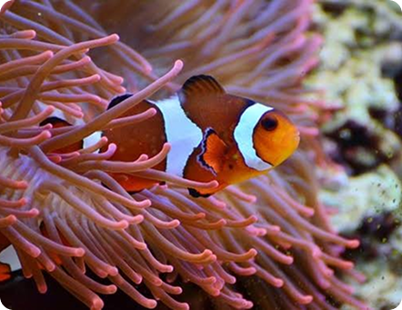
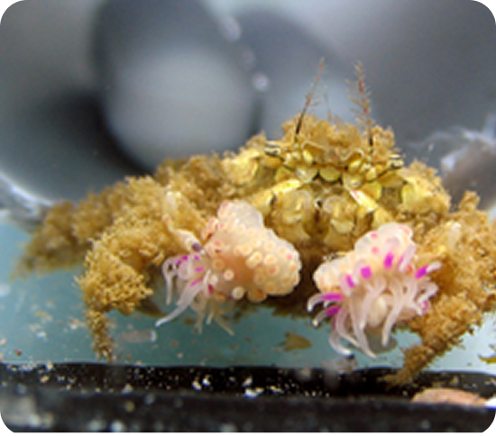

Simbiose
A simbiose pode ser definida como uma associação a longo prazo entre dois organismos de espécies
diferentes seja essa relação benéfica para ambos os indivíduos envolvidos ou não. Todos os animais e
plantas conhecidos estabelecem algum tipo de relação simbiótica.

No meio científico ainda não há um consenso sobre a definição correta do termo simbiose. Há várias
definições vigentes e há um amplo debate sobre as vantagens e limites de cada definição. Segundo Pradeu
o termo simbiose pode ser definido como qualquer interação a longo prazo entre indivíduos de
diferentes espécies, sendo essa associação evolutivamente benéfica para o hospedeiro e neutra ou benéfica
para o simbionte. Para outros autores, a simbiose pode ser definida de maneira mais ampla, sendo
então uma associação a longo prazo entre dois organismos de diferentes espécies, sendo essa a acepção mais
aceita atualmente.

Essa última definição difere da primeira de maneira crucial ao desconsiderar os efeitos sobre o fitness dos
envolvidos nessa associação, o que pode ser uma vantagem dada a dificuldade em determinar se certas interações
mais voláteis, isto é, que transitam de um estado para outro, podendo estas serem benéficas, neutras ou
prejudiciais para um dos envolvidos.